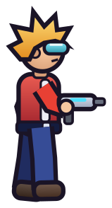
Dash
The all-rounder
- Hearts
- 9
- Jump
- 7 cells
- Starts with
- Blaster
Duke's own jump and a cool head. Does the talking when somebody has to.
A jump-n-shoot for Linux and Android
Six couriers. Forty-two jobs. A client called MAX who pays by the job and says don't ask what's in the box. Run, jump and blast your way across neon rooftops, a lost temple, a frozen space station and an alien hive planet, in a platformer that plays like Duke Nukem II.
Recorded straight out of the game, sound and all: the art is all vectors and every sound is synthesized live.
Clips start muted: hit the speaker icon to hear the soundtrack.
It's a 1987 that never ended. Six couriers, six phones chiming in a diner in Neon City. A scrambled hologram rises out of the table:
MAX “Forty-two jobs. Paid by the job. Don't ask what's in the box.”
So the runners run. A package on a rooftop where the signs keep time. A gunship called Black Halo. A jungle temple, a golem made of gold, a research station in orbit whose AI has locked the crew out. Every job ends with a prototype weapon in a green box, and every prototype goes back to MAX.
But a gunship shouldn't carry a camera lens. Temple gold shouldn't weigh nothing. And nobody should hear a laugh track in the jungle.
Somebody is watching. And the ratings are through the roof.
At the end of Station Zero a wall falls over and the runners are standing in a TV studio, in front of a cheering audience. The host, Lance Marquee, thanks them for “season one of GUNRUNNERS” on behalf of the sponsor, Halcyon Arms: buyers in forty countries watched every prototype at work.
DASH “We've been running their guns.”
Season Two drops them through a trapdoor into the network itself: a Western, a haunted manor, a cooking show, a kaiju movie, film noir and a cartoon. Then a faint voice in the static teaches them to tune the signal and climb the transmitter mast. The voice is Maxine Vale, the show's director, who was MAX all along and hid the candid cameras where they would be found. The finale is live, and this time the runners pick what goes out on air.
And Episode 7? A misdialled teleport beam dumps them on Vurr, a living alien planet, where a relic called the Star Seed has to be taken back before the Hive Mother gets it.
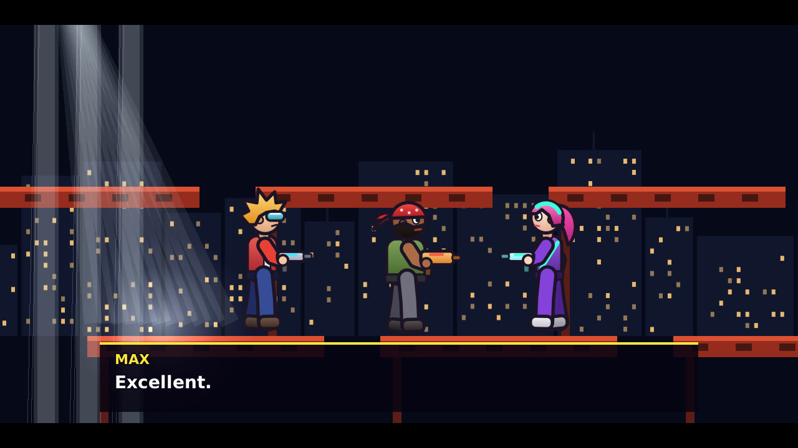
Pick one, or swap mid-level with a single button: weapon, ammo and items carry over. They differ in health, jump height and what they start with.

The all-rounder
Duke's own jump and a cool head. Does the talking when somebody has to.
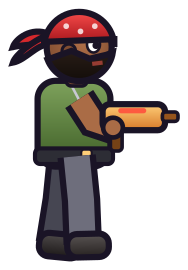
The heavy
Ex-cop, lowest jump, most hearts. Asks the awkward questions.
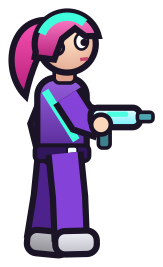
The acrobat
A courier in a racing suit with the highest jump. Flies anything.
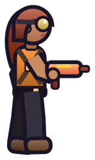
The pyro
Down + fire on the flamethrower is a jetpack. Jade knows.
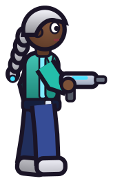
The scout
Fast hands and a high jump. Makes the first minute count.
The machine
A robot. Heavy, hard to dent and fully charged.
Not enough? NEW RUNNER on the select screen builds your own: human or robot, hair, face, outfit, colours, a starting gun and ten points to spread over health, jump and power.
Almost every level brings its own residents. Some of the over 150 kinds of enemy, and the ones that run the show:
Level 7 · Chopper Down
A gunship with a searchlight and a rope full of troopers. Lock-On Rockets help. It also carries a camera lens, for some reason.
Level 14 · The Idol Awakens
The temple's golden guardian. Every gem you pick up feeds a greed meter that plates the golem in gold; gems offered at the altars bring it back down.
Level 21 · ZERO
The station's AI rewires the level around you while you work out why it keeps saying “please be quick.”
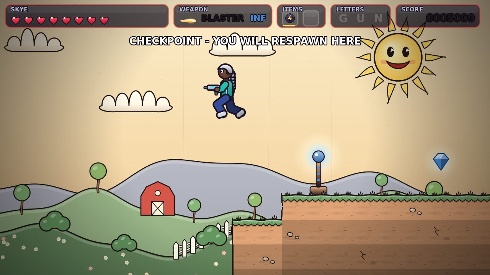
Level 28 · Toon Town Throwdown
A rubber-hose cartoon star with a mallet, a pie and a giant pencil that draws new floors (and erases yours).
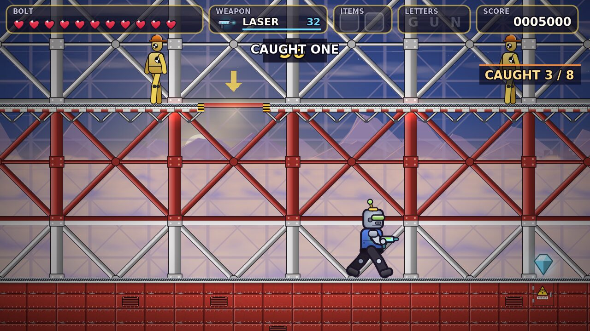
Level 35 · The Transmitter
Halcyon Arms' biggest demo model, sent up the transmitter mast to keep the signal from pointing home.
Level 49 · The Hive Mother
The queen of Vurr on a throne of eggs, with Spore Nurses to heal her. Shoot her crown when it glows. Then run.
The anonymous client: a scrambled hologram, a fat fee per job and a strict no-questions policy.
Makers of the prototypes the runners keep fetching. Slogan: Peace through firepower.
All teeth and cue cards. Turns up later, and he has a hover podium.
Every campaign level (1 to 42) has its own twist, its own prototype weapon, its own soundtrack, secrets, a briefing and a bonus level behind a flickering TV. “WE'LL BE RIGHT BACK!” Deep Space has twists of its own.
Episode 1
A 1987 that never ended
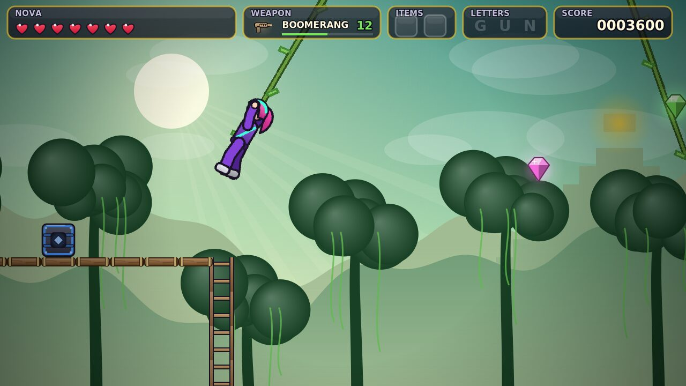
Episode 2
Gold, traps and a golem
Episode 3
A frozen base in orbit
Episode 4
Every channel is a level
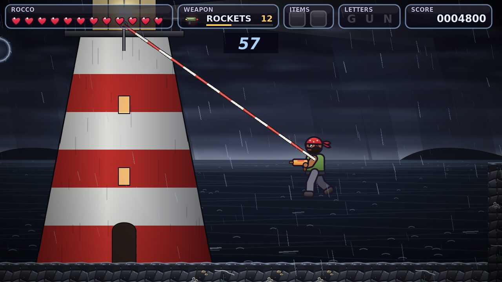
Episode 5
Find the transmitter
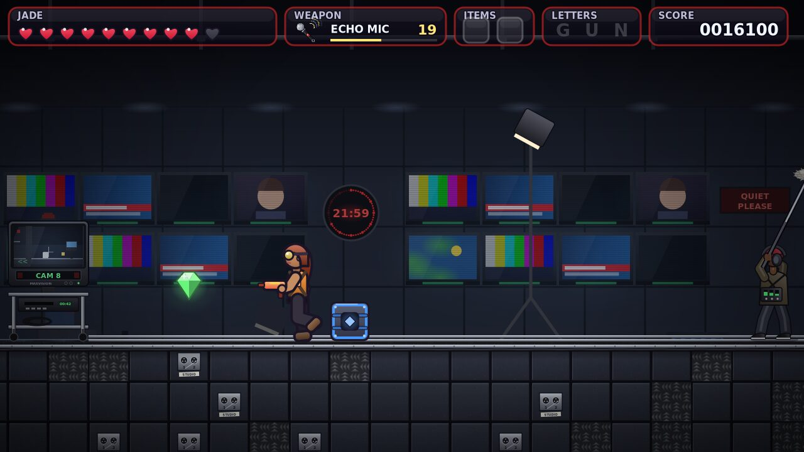
Episode 6
The show must go on
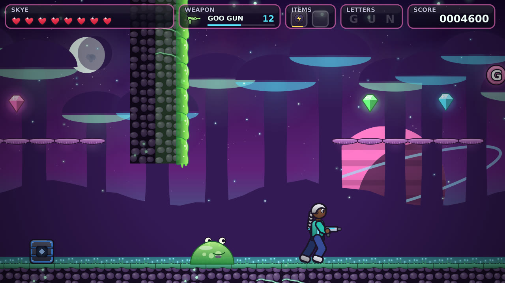
Episode 7
A misdialled beam to an alien world
Playable any time from WORLD SELECT. No bonus levels here: Vurr has twists of its own.
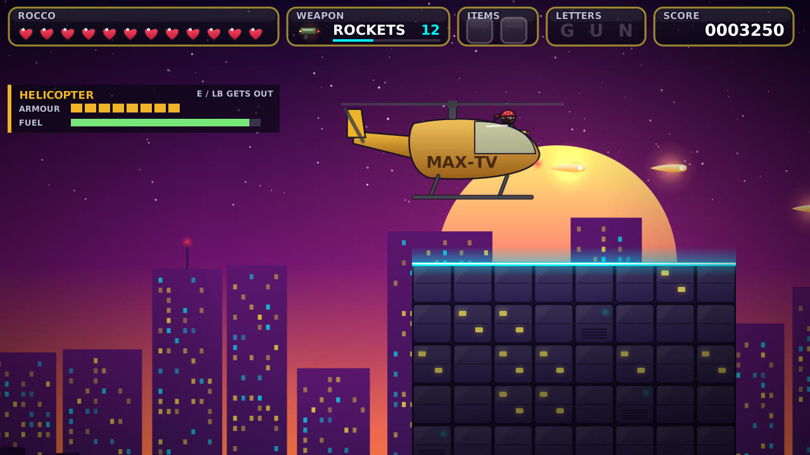
Extras
Two levels built around the vehicles
Tank, helicopter, hoverbike, submarine, space ship and mech. Hits go to the armour, not your hearts.
The jump arc, ladders, hang bars and the flamethrower jetpack are ported from Duke Nukem II via RigelEngine.
Find the TV static and press up: a short level with crazy rules, then back where you were. Beat it for a Bonus Star.
Almost every level hides a prototype weapon. Reach the exit with it and it joins your collection, with your best kill count.
A rubber duck in every level, candid cameras, hidden gem caches, the letters G-U-N and the number 42 somewhere.
Synthwave, house, dub, marimba, slide guitar, a waltz, noir trumpet, big band, arena rock. All synthesized: no samples.
Keyboard, most gamepads (Xbox, PlayStation, Switch Pro, 8BitDo, Steam Deck), or touch on Android. Five save slots plus quick save, optionally synced to an S3 bucket.
Free software under the GNU GPL, version 2 or later. No ads and no accounts.
Install with F-Droid from Paul's
repository: open snonux/fdroid
for the one-tap link and QR code, or add
https://snonux.github.io/fdroid/repo under
Settings > Repositories and search for Gunrunners.
On-screen thumb controls, or any Bluetooth or USB gamepad.
Grab gunrunners-vX.Y.Z-linux-x86_64.tar.gz from the
latest release
when it carries one, unpack it anywhere and start gunrunners.
It needs SDL2, Cairo, libcurl and the DejaVu fonts. Or build it, on any architecture:
git clone https://github.com/snonux/gunrunners
cd gunrunners
sudo dnf install gcc-c++ cmake SDL2-devel cairo-devel libcurl-devel # Fedora
sudo apt install build-essential cmake libsdl2-dev libcairo2-dev libcurl4-openssl-dev # Debian/Ubuntu
./build.sh -rEverything is on GitHub: the C++ engine, all 49 levels as text files, the cutscene scripts, the synthesizer and the tools that drew this page's box art and recorded its clips.